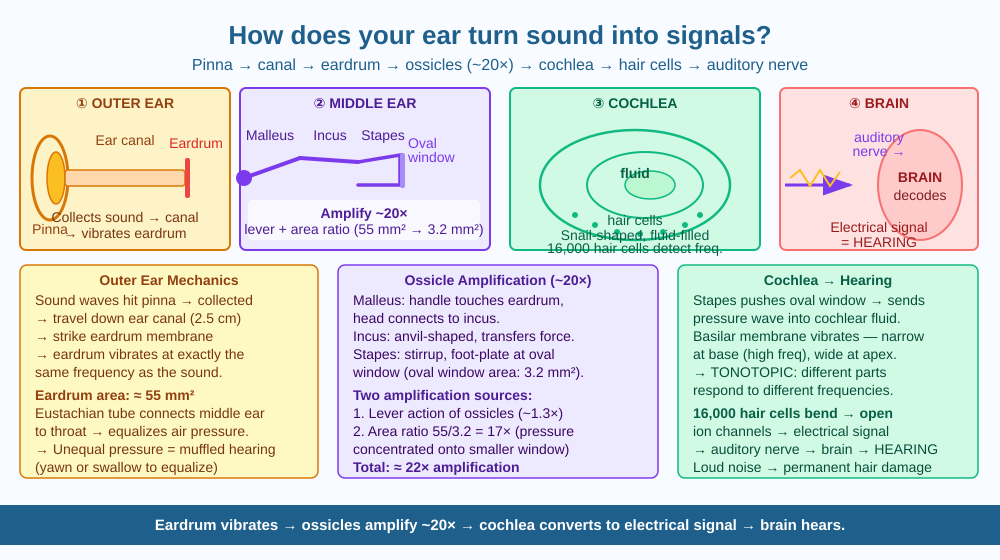

By the end of this lesson, you should be able to name the three bones of the middle ear, trace the path of a sound wave from outside the ear to the brain, and predict what happens to hearing when the ossicles are damaged.
Your ear is about the size of your fist, yet it can detect sounds ranging from a whispered conversation to a jet engine — a difference in energy of more than a trillion times. It can tell apart two musical notes that differ by just a few vibrations per second. How does a small organ made of skin, bone, and fluid achieve something no man-made microphone can match across the full range of human hearing?
The ear converts sound waves (pressure waves in air) into electrical nerve signals that the brain can interpret. It does this in three stages — outer ear, middle ear, and inner ear.
Outer ear — collecting the signal. The pinna (the visible flap on the side of your head) acts as a funnel. Its curved shape collects sound waves from a wide area and directs them into the ear canal, a tube about 2.5 cm long. Sound waves travel down the ear canal and hit the eardrum (tympanic membrane) — a thin, cone-shaped membrane stretched across the end of the canal. Sound waves make the eardrum vibrate back and forth at the same frequency as the incoming sound.
Middle ear — amplifying the signal. Behind the eardrum is the middle ear, containing the three smallest bones in the human body — the ossicles: 1. Malleus (hammer): Attached directly to the eardrum; vibrates with it 2. Incus (anvil): Connected to the malleus; passes the vibration on 3. Stapes (stirrup): The smallest bone; pushes against a membrane called the oval window of the inner ear
The ossicles act as a mechanical lever system that amplifies the vibration by about 20 times. Part of this amplification comes from the size difference: the eardrum has an area of about 55 mm² but the oval window is only about 3.2 mm² — the same force concentrated into a much smaller area creates much greater pressure.
The middle ear is connected to the throat by the Eustachian tube, which equalises air pressure on both sides of the eardrum. When you "pop" your ears by swallowing or yawning on an aeroplane, the Eustachian tube is opening to balance the pressure difference caused by altitude change.
Inner ear — converting vibration to electricity. The stapes pushes the oval window, creating pressure waves in the fluid-filled cochlea — a snail-shaped tube coiled about 2.5 times. Inside the cochlea, the fluid waves cause the basilar membrane to vibrate. The basilar membrane is covered with about 16,000 specialised hair cells.
The hair cells are tuned to different frequencies: cells near the base of the cochlea (near the oval window) respond to high frequencies (treble sounds), while cells near the apex (tip) respond to low frequencies (bass sounds). When a hair cell is bent by the vibrating fluid, it generates an electrical signal. These signals travel along the auditory nerve to the brain's auditory cortex, where they are interpreted as sound.
Sound wave → eardrum vibrates → ossicles amplify the vibration → oval window passes it to cochlear fluid → basilar membrane vibrates → hair cells bent → electrical signal → auditory nerve → brain hears
Five transductions (conversions): air pressure wave → mechanical vibration (eardrum) → amplified mechanical (ossicles) → fluid pressure wave (cochlea) → electrical signal (hair cells).
The included SVG shows a simplified cross-section of the ear:

Dogs can hear sounds up to about 65,000 Hz; humans top out at about 20,000 Hz as adults (and as low as 15,000 Hz in older adults). Bats can hear up to 200,000 Hz.
The difference lies in the basilar membrane. In dogs and bats, the basilar membrane extends further and has hair cells tuned to much higher frequencies than the human basilar membrane can manage. The mechanism is identical — but the frequency range of the "keyboard" differs by species.
Predict: As a person ages from 20 to 70, the hair cells at the base of the cochlea (which detect high frequencies) tend to deteriorate first. What would you predict an elderly person would have more difficulty hearing — a high-pitched whistle or a low-pitched rumble? Why?
What is the mechanism by which the ear converts sound waves into nerve signals?
Why is understanding the mechanism of hearing more useful than knowing that ears detect sound?
If the tiny bones (ossicles) inside a person's ear were damaged, what would you predict would happen?
Draw the complete path of a sound wave from a cricket match commentary on a radio to the moment you consciously hear it, labelling every conversion of energy type along the way. Then identify which part of your ear would cause the greatest hearing loss if destroyed — and explain why.
The three ossicles — the malleus, incus, and stapes — evolved from bones that were part of the jaw in ancient reptile ancestors. Over millions of years of evolution, two of the jaw bones gradually migrated into the skull and became specialised for hearing. This means the tiny bones that let you hear music were once used by a lizard-like ancestor to bite prey — one of the most remarkable transitions in evolutionary history.
Eardrum vibrates → ossicles amplify ~20× → cochlear fluid waves → hair cells bend → electrical signal → auditory nerve → brain. Damaged ossicles = significantly reduced hearing.